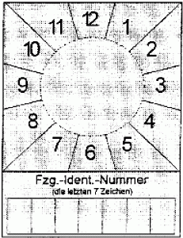
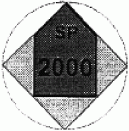

| 1 | Vorgeschriebene Beschaffenheit | |
| 1.1 | Muster | |
|
 |
 |
|
| 1.2 | Abmessungen und Gestaltung | |
| 1.2.1 | Prüfmarke | |
| 1.2.1.1 | Allgemeines Material: Kantenlänge der Prüfmarke: Strichfarben: Schriftart: Schriftfarbe: |
Folie oder Festkörper aus Kunststoff 24,5 mm x 24,5 mm schwarz Helvetica medium schwarz. |
| 1.2.1.2 | Grundkörper von Prüfmarken, die als Festkörper ausgebildet sind | |
| Durchmesser: Höhe: Farbe: Umrandung: |
35 mm 3 mm grau keine. |
|
| 1.2.1.3 | Fläche des Pfeiles: Kantenlänge des Pfeilschaftes: Kantenlänge der Pfeilspitze: Farbe: |
17,3 mm x 17,3 mm Basislinie: 17,3 mm Seitenlinien: 12,2 mm jeweils entsprechend dem Kalenderjahr, in dem die nächste Sicherheitsprüfung durchgeführt werden muss (Durchführungsjahr). Sie ist für das Durchführungsjahr 1999 - rosa 2000 - grün 2001 - orange 2002 - blau 2003 - gelb 2004 - braun. Die Farben wiederholen sich für die folgenden Kalenderjahre jeweils in dieser Reihenfolge. |
| Strichstärke der Umrandung: Anordnung Text "SP": |
0,7 mm vertikal zentriert, Buchstabenunterkante 10 mm unter der Pfeilspitze |
|
| Schrifthöhe Text "SP": Anordnung Jahreszahl: Schrifthöhe Jahreszahl: |
4 mm vertikal und horizontal zentriert 5 mm. |
|
| 1.2.1.4 | Restfläche: Farbe: Umrandung: |
grau keine. |
| 1.2.2 | SP-Schild | |
| 1.2.2.1 | Allgemeines Material: Kantenlänge (Höhe x Breite): Grundfarbe: Strichfarben: Schriftfarben: |
Folie, Kunststoff oder Metall 80 mm x 60 mm grau schwarz schwarz. |
| 1.2.2.2 | Quadrat Monatsangabe Kantenlänge: |
60 mm |
| Anordnung der Monatszahlen: | 1 bis 12 jeweils um 30 Grad im Uhrzeigersinn versetzt, an einem fiktiven Kreisring von 40 mm Durchmesser außen angesetzt | |
| Schriftart: | Helvetica medium, zweistellige Zahlen in Engschrift | |
| Schrifthöhe: | 5 mm | |
| Linien zwischen den Monatszahlen: | sechs jeweils fiktiv durch den Mittelpunkt des Quadrates verlaufende, um 30 Grad versetzte Linien | |
| Strichstärke: | 0,5 mm. | |
| 1.2.2.3 | Kreisfläche Beschaffenheit: Anordnung Mittelpunkt: Innendurchmesser: Umrandung: Grundfarbe: |
Damit die Prüfmarke von dem SP-Schild abgelöst werden kann, ohne dieses zu zerstören, sollte die Kreisfläche mindestens 1 mm positiv erhaben sein. auf den Mittelpunkt des Quadrates (Monatsangabe) zentriert 35 mm keine grau. |
| 1.2.2.4 | Feld, "Fzg.-Ident.-Nummer" Anordnung: Kantenlänge (Höhe x Breite): Einzelfelder (Höhe x Breite): Strichstärke: Schrift: Schrifthöhe ("Fzg.-Ident.-Nummer"): Schrifthöhe ("die letzten 7 Zeichen"): |
je 2 mm Abstand zur seitlichen und unteren Außenkante 12 mm x 56 mm 7 Felder, 12 mm x 8 mm 0,5 mm Helvetica medium 3 mm 2 mm. |
| Bei Ausführung des SP-Schildes als Folie muss das Feld nach der Beschriftung mit einer zusätzlichen Schutzfolie gesichert werden. | ||
| 1.2.3 | Farbtöne der Beschriftung und des Untergrundes Farbregister RAL 840 HR, herausgegeben vom RAL Deutsches Institut für Gütesicherung und Kennzeichnung e.V., Siegburger Straße 39, 53757 St. Augustin. | |
| Als Farbton ist zu verwenden: | schwarz - RAL 9005 braun - RAL 8004 rosa - RAL 3015 grün - RAL 6018 gelb - RAL 1012 blau - RAL 5015 orange - RAL 2000 grau - RAL 7035. |
|
1.2.4 |
Dauerbeanspruchung Prüfmarke und SP-Schild müssen so beschaffen sein, dass sie für die Dauer ihrer Gültigkeit den Beanspruchungen beim Betrieb des Fahrzeugs standhalten. |
|
| 2 | Ergänzungsbestimmungen | |
| 2.1 | Fälschungssicherheit Damit Fälschungen erschwert und nachweisbar werden, sind durch den Hersteller bestimmte Merkmale und zusätzlich eine Herstellerkennzeichnung einzubringen, die über die gesamte Lebensdauer der Prüfmarke wirksam und erkennbar bleiben. |
|
| 2.1.1 | Prüfmarken in Folienausführung Es sind unsichtbare Schriftmerkmale und zusätzlich eine Herstellerkennzeichnung, die ohne Hilfsmittel nicht erkennbar sind, einzuarbeiten. Die Erkennbarkeit muss durch die Verwendung von mit Black-light-Röhren (300 - 400 nm) ausgerüsteten Prüflampen gegeben sein. Die verwendeten Schriften der Kennzeichnung müssen in nicht fälschbarer Microschrift ausgeführt sein. In die Kennzeichnung ist der Hersteller und das Produktjahr in Form einer Zahlenkombination einzubringen. Die Zeichen haben eine maximale Höhe von 2 mm und eine maximale Strichstärke von 0,75 mm. Es sind Flächensymbole einzuarbeiten. |
|
| 2.1.2 | Prüfmarken in Festkörperausführung Die Umrandung des Pfeiles, der Text "SP" und die Jahreszahl müssen mindestens 0,3 mm positiv erhaben sein. Auf der Rückseite der Prüfmarke muss eine zusätzliche Kennzeichnung aufgebracht werden. In die Kennzeichnung ist der Hersteller und das Produktjahr in Form einer Zahlenkombination einzubringen. Dies gilt nicht, wenn die Prüfmarken die Anforderungen nach 2.1.1 erfüllen. |
|
| 2.2 | Übertragungssicherheit | |
| 2.2.1 | Allgemeines Bei Prüfmarken oder SP-Schildern aus Folie muss zur Gewährleistung der Übertragungssicherheit der Untergrund vor dem Aufbringen frei von Staub, Fett, Klebern, Folien oder sonstigen Rückständen sein. |
|
| 2.2.2 | Entfernung von Prüfmarken Es muss gewährleistet sein, dass sich Prüfmarken bei ordnungsgemäßer Anbringung nicht unzerstört entfernen lassen. Der Zerstörungsgrad der Prüfmarken muss so groß sein, dass eine Wiederverwendung auch unter Korrekturen nicht möglich ist. Es darf nicht möglich sein, aus zwei abgelösten (entfernten) Prüfmarken eine Ähnlichkeitsfälschung herzustellen. |
|
| 2.3 | Echtheitserkennbarkeit im Anlieferungszustand Die Verarbeiter von Prüfmarken (Zulassungsbehörden, Technische Prüfstellen, Überwachungsorganisationen, anerkannte Kfz-Werkstätten) müssen im Anlieferungszustand die systembedingte Echtheit erkennen können. Dies wird durch ein genau definiertes und gekennzeichnetes Schutzpapier auf der Rückseite der Prüfmarken oder durch die auf der Rückseite der Festkörper aufgebrachten fälschungserschwerenden Schriftmerkmale nach Nummer 2.1.2 Absatz 1 sichergestellt. In der Sichtfläche der Prüfmarke ist eine nicht aufdringliche und das Gesamtbild nicht störende fälschungserschwerende Produktkennzeichnung eingebracht. Die Prüfmarken sind in übersichtlich zählbaren Behältnissen verpackt. |
|
| 2.4 | Anbringung der Prüfmarken und SP-Schilder Die individuelle Beschriftung des SP-Schildes mit der Fahrzeug-Identifizierungsnummer erfolgt mit einem dokumentenechten Permanentschreiber. Diese Beschriftung ist durch eine Schutzfolie zu sichern. Beim Ablösen der Schutzfolie muss sich das Feld "Fzg.-Ident.-Nummer" so zerstören, dass eine Wiederverwendung auch unter Korrekturen nicht möglich ist. Bei Ausführung des SP-Schildes als Festkörper aus Kunststoff oder Metall können die Zeichen auch positiv oder negativ erhaben aufgebracht werden; eine zusätzliche Schutzfolie ist dann entbehrlich. Das SP-Schild ist gut sichtbar am Fahrzeugheck in Fahrtrichtung hinten links anzubringen. Die Anbringungshöhe ist so zu wählen, dass sich die Oberkante des SP-Schildes mindestens 300 mm und maximal 1 800 mm über der Fahrbahn befindet. Die rechte Kante des SP-Schildes darf nicht mehr als 800 mm vom äußersten Punkt des hinteren Fahrzeugumrisses entfernt sein. Davon kann nur abgewichen werden, wenn die Bauart des Fahrzeugs diese Anbringung nicht zulässt. Die Prüfmarke ist auf der Kreisfläche oder in dem Haltering des SP-Schildes so anzubringen, dass die Pfeilspitze auf den Monat zeigt, in dem das Fahrzeug zur nächsten Sicherheitsprüfung nach den Vorschriften der Anlage VIII vorzuführen ist. |
|
| 2.5 | Bezug von Prüfmarken Die Hersteller von Prüfmarken beliefern ausschließlich die Zulassungsbehörden, die Technischen Prüfstellen, die Überwachungsorganisationen und die für die Anerkennung von Werkstätten zur Durchführung von Sicherheitsprüfungen zuständigen Stellen. Die Anerkennungsstellen nach Nummer 1.1 Anlage VIIIc beliefern die zur Durchführung von Sicherheitsprüfungen anerkannten Werkstätten. Die zuständige oberste Landesbehörde oder die von ihr bestimmten oder nach Landesrecht zuständigen Stellen können Abweichendes bestimmen. |
|